Linux内核深度学习
Linux内核阅读
本篇则是对《Linux系统进程》的一个扩展，主要是研究Linux内核的相关内容
绪论
操作系统的基本概念
操作系统主要是完成两个主要的目标
- 与硬件进行交互，为包含在硬件平台上的所有可能的低层可编程部件服务
- 为服务在计算机运行资源上的应用程序提供运行的环境
值得一提的是：操作系统在开机的时候，内核会被装入RAM，内核包含了操作系统的核心部分，其他更加像是交互的部分不会装入，只在用到的时候进行加载
硬件保障了应用程序不会直接跟底层打交道。为此，CPU被引入至少两种模式：用户程序的非特权模式和内核的特权模式。在Unix中的术语便是：用户态和内核态
多用户系统
他是一台可以并发和独立的执行分别属于两个或者是多个用户的诺干应用程序的计算机。
- 核实用户身份的验证机制
- 防止有错误的用户程序妨碍其他应用程序在系统的保护机制
- 防止有恶意的用户程序干涉和窥视其他用户进程的活动的保护机制
- 限制分配给每个用户的资源数的记账机制
用户和组
所有的用户都是使用一个数字进行表示的，他就是User ID，每一个用户也属于一个组。
Unix内核概述
如前所示，CPU存在两个状态。对于大部分应用程序，他们一般是运行在用户态，只在需要内核服务（也就是需要向低层打交道的时候）的时候才会向操作系统请求陷入内核态，当请求完成后又会退回到用户态下。
进程是动态的实体，在系统内通常只有有限的生存期。创建、撤销、及同步现有进程的任务都委托给内核中的一组例程来完成
内核本身并不是一个进程，而是进程的管理者。进程/内核模式假定请求内核服务的进程使用所谓系统调用的特殊编程机制。每个系统调用都设置了一组识别进程请求的参数，然后执行与硬件相关的CPU指令完成从用户态到内核态的转换。
除用户进程之外Unix系统还包括几个所谓内核进程的特权进程它们具有以下特点 ：
- 他们以内核态运行在内核地址空间
- 他们不需要与用户直接进行交互，因此不需要终端设备
- 他们通常在系统启动的时候创建，然后一直活跃到系统关闭
Unix中可以向内核态转换的几种常见的方式：
- 进程调用系统调用
- 正在执行进程的CPU抛出异常信号需要处理
- 外围设备向CPU发出中断以等待一个事情的发生。
- 内核线程被执行
进程的实现
为了保存进程的相关信息方便管理，我们需要存储运行时候的寄存器的值：
- PC和SP
- 通用寄存器
- 浮点寄存器
- 包含CPU状态信息的处理器控制寄存器（处理器关键字，PSW）
- 跟踪进程对RAM访问的寄存器
可重入的内核
所有的Unix内核都可以重入：
重入一般可以理解为一个函数在同时多次调用，例如操作系统在进程调度过程中，或者单片机、处理器等的中断的时候会发生重入的现象。
可重入的函数必须满足以下三个条件：
（1）可以在执行的过程中可以被打断；
（2）被打断之后，在该函数一次调用执行完之前，可以再次被调用（或进入，reentered)。
（3）再次调用执行完之后，被打断的上次调用可以继续恢复执行，并正确执行。
可重入函数可以在任意时刻被中断，稍后再继续运行，不会丢失数据。不可重入（non-reentrant）函数不能由超过一个任务所共享，除非能确保函数的互斥（或者使用信号量，或者在代码的关键部分禁用中断）。 基于上述的陈述，事情变得显然：想要让函数可重入，他们只可以修改局部变量。
如果一个硬件中断发生，可重入内核能挂起当前正在执行的进程，即使这个进程处于内核态。这种能力是非常重要的，因为这能提高发出中断的设备控制器的吞吐量。一旦设备已发出一个中断，他就一直等待直到CPU应答他为止。如果硬核内核能够快速应答，设备控制器在CPU处理中断时就能执行其他任务
下面我们看看内核的可重入性以及他对内核组织的影响。内核控制路径表示的是内核处理系统调用，异常或者是中断所执行的指令序列。
最最简单的情形下：CPU从第一天条指令开始执行到最后一条。更为复杂的情况在下面：
- 运行在用户态下的进程调用一个系统调用，而相应的内核控制路径证实这个请求无法立即得到满足。然后内核控制路径调用调度程序选择一个新的进程投入运行结果，进程切换发生。第一个内核控制路径还没完成，而CPU又重新开始执行其他的内核控制路径。在这种情况下两条控制路径代表两个不同的进程在执行。
- 当运行一个内核控制路径时cpu检测到一个异常（例如访问一个不在RAM中的页）。第一个控制路径被挂起，而cpu开始执行合适的过程。在我们的例子中，这个过程能给进程分配一个新页，并从磁盘读取它的内容。当这个过程结束时，第一个控制路径可以恢复执行。在这种情况下两个控制路径代表同一个进程在执行。
- 当CPU正在运行一个启动了中断的内核控制路径时，一个硬件中断发生。第一个内核控制路径还没执行完毕。CPU开始执行另一个内核控制路径来处理这个中断。当这个中断处理程序终止时，第一个内核控制路径恢复在这种情况下。两个内核控制路径运行在同一进程的可执行上下文中，所花费的系统CPU时间都算给这个进程。然而，中断处理程序无需代表这个进程进行
- 在支持抢占式调度的内核中，CPU正在运行。而一个更加高优先级的进程加入就绪队列，则中断发生。在这种情况下第一个内核控制路径还没执行完毕，CPU代表高优先级进程又开始执行另一个内核控制路径。只有把内核编译成支持抢占式调度之后才可能出现这种情况
进程地址空间：
每一个进程都有他的私有地址空间，在用户态下运行达到进程涉及私有栈，数据区和代码区。
内核的可重入性允许我们的多个内核控制路径可以轮流的执行。对于多个用户，代码区的内容可以并不用分开存储，而是公用。只需要保存每一个用户的数据即可
Linux支持使用mmap将块设备上的文件和信息的一部分直接映射到进程的部分地址。于是，每一个进程地址空间就要包含这内存映射。
同步和临界区
实现可重入内核的需要同步机制：他要求所有的内核控制路径的数据结构必须一致。否则可能产生错误。我们称呼那些将会修改全局变量的多个进程之间构成了竞争条件。
一种方案就是生成那种非抢占式的内核，他无法被简单的挂起也无法被代替。另一种方案就是禁止中断
信号量Semaphore
定义：
有时被称为信号灯，是在多线程环境下使用的一种设施，是可以用来保证两个或多个关键代码段不被并发调用。
目的：
类似计数器，常用在多线程同步任务上，信号量可以在当前线程某个任务完成后，通知别的线程，再进行别的任务。
分类:
- 二值信号量：信号量的值只有0和1，这和互斥量很类似，若资源被锁住，信号量的值为0，若资源可用，则信号量的值为1；
- 计数信号量：信号量的值在0到一个大于1的限制值之间，该计数表示可用的资源的个数。
信号量在创建时需要设置一个初始值，表示同时可以有几个任务可以访问该信号量保护的共享资源，初始值为1就变成互斥锁Mutex，即同时只能有一个任务可以访问信号量保护的共享资源
内存寻址
在使用80x86处理器的时候，我们有三个地址需要注意：
- 逻辑地址：包含在机器语言指令中用来指定一个操作数或一条操作指定的地址。这种寻址方式在8086著名的分段结构中表现得尤为具体。它使Ms dos或Windows程序员把程序分成若干段，每一个逻辑地址都有一个段和偏移量组成。偏移量指明了从段开始的地方到实际地址的偏移距离。
- 线性地址也被称为虚拟地址，是一个32位无符号整数。可以用来表达高达4GB的地址线性地址通常用16进制数字表示。。
- 物理地址用于内存芯片及内存单元寻址，他们从微处理器的地址引脚发送到内存总线上的电信号相对应。
MMU通过一种分段单元的硬件电路，将逻辑地址转化为线性地址，然后分页单元再转化线性地址到物理地址。
从80286开始，Intel微处理器开始以两种不同的方式执行地址转换，分别是保护模式和实模式。实模式是为了和早期的模型相互兼容。。。
段选择符和段寄存器
一个逻辑地址是由两个部分组成的：段标识符和段偏移地址。前者16字节长：0, 1两位构成特权级（RPL），第二位表示的是表指示器（TI：是LDT还是GDT），后面的几位就是索引号。
有六个段选择器：cs, ss, ds, es, fs, gs。注意，这三个有专门的用途：
cs : 代码段寄存器
ss : 栈寄存器
ds : 数据段寄存器
段描述符
每一个段都是一个8字节的段描述符表示，他展现了段的特征。段描述符分为GDT和LDT。一般而言只有一个GDT放在gdtr，每一个进程都有自己的LDT. 可以这样查看每一个位的含意。
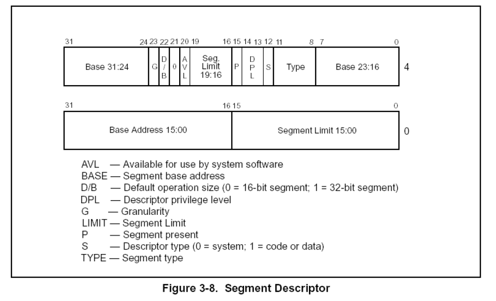
P位
P = 1段描述符有效，P = 0段描述符无效。
Base
Base被分成了三个部分，从图可知：Base的低16位被放到了段描述符的低四个字节，高16位被均分到段描述符的高四个字节的头和尾。把它们依次拼接起来就是完整的Base。
Limit
由图可知，把段描述符中所有的Limit拼接起来就只有20位。上一节教程说它有32位的Limit。那就是要看G位了。
G位
如果G = 0，说明段描述符中的Limit的单位是字节，段长度Limit范围可从1B～1MB，即在20位的前面补3个0即可；如果G = 1，说明段描述符中的Limit的单位是字节为4KB，即段长度Limit范围可从4KB～4GB，在20位的后面补充FFF即可。举个例子，如果Limit拼接后的为FFFFF，如果G为0则为000FFFFF，反之为FFFFFFF。
S位
S = 1代码段或者数据段描述符，S = 0系统段描述符。
TYPE域
TYPE域是比较复杂的成员，它表示的含义受S位的影响。
当S位为1时
此时段描述符表示的是代码段或者数据段，如下图所示：
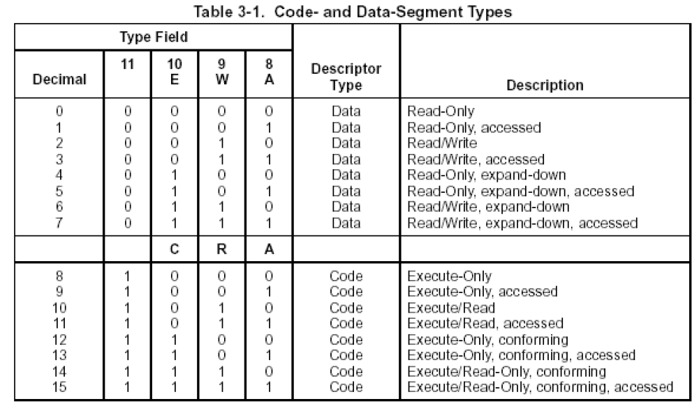
对于表格中Type域的属性和含义，如下表格所示：
| 属性 | 含义 | 属性 | 含义 |
|---|---|---|---|
| A | 访问位 | E | 向下扩展位 |
| R | 可读位 | W | 可写位 |
| C | 一致位 |
对于比较特殊的属性，我们将进一步介绍：
C位
C = 1：一致代码段；C = 0：非一致代码段。什么是一致代码段，什么是非一致代码段，将在后面的教程进行介绍。
E位
什么是向下拓展位，我们以fs为例来看一下如下示意图：
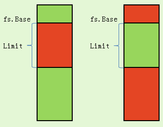
左边表示向上拓展，右边是向下拓展。即向上拓展base到base+limit之间区域有效，其余无效；向下拓展base到base+limit之间的区域无效，其余有效。这个位针对数据段有效。
当S位为0时
此时段描述符表示的是系统段，系统段有很多种，将会在后面的教程进行详细讲解。Type域每一个数值的含义如下图所示：
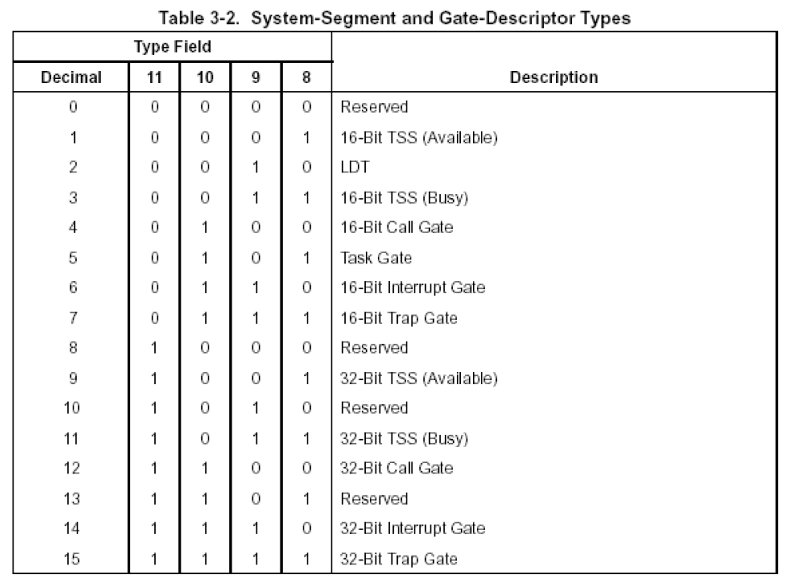
DB位
DB位对不同的段具有不同的影响，情况如下：
1️⃣ 对CS段的影响
D = 1采用32位寻址方式,D = 0采用16位寻址方式。
2️⃣ 对SS段的影响
D = 1隐式堆栈访问指令（如：PUSH POP CALL）使用32位堆栈指针寄存器ESP，D = 0隐式堆栈访问指令（如：PUSH POP CALL）使用16位堆栈指针寄存器SP。
3️⃣ 向下拓展的数据段
D = 1段上线为4GB，D = 0段上线为64KB。至于是什么意思，我们来看下面一张图。
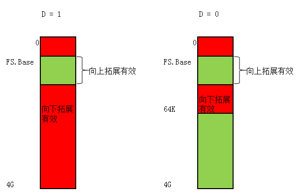
红色表示向下拓展能寻址的范围。可以看出，如果D = 0，就算原来能寻址4GB，因为DB位的限制导致最大范围是64KB。
DPL
DPL(Descriptor Privilege Level)，即描述符特权级别，规定了访问该段所需要的特权级别是什么。如果通俗的理解，就是：如果你想访问我，那么你应该具备什么权限。
AVL
AVL指示是否可供系统软件使用，由操作系统来使用，CPU并不使用它。
逻辑地址如何转化为线性地址
首先检查TI字段决定是去LDT还是GDT查描述表，然后从段选择符那里计算地址取出表中对应的数据乘以一个段描述符的大小。这个结果在跟ldtr或者是gdtr的结果相加，将逻辑地址的偏移量与Base字段值相加得到线性地址。
Linux中的分段
8086微处理器的分段鼓励程序员进行分段。但是Linux更喜欢分页的方式，它可以把同一个线性地址空间映射到不同的物理空间。
原因如下：
- 当所有进程使用相同的段寄存器值时，内存管理变得非常简单。也就是说他们能共享同样的一组线性地址
- Linux设计目标之一是可以把它移植到绝大多数流行的处理器平台上，然而RISC体系结构对分段的支持非常有限
运行在用户态下的所有Linux进程都会使用一对相同的段来对指令和数据进行寻址，他们就是用户代码段和用户数据段。对于内核也是举一反三的
| 段 | Base | G | Limit | S | Type | DPL | D/B | P |
|---|---|---|---|---|---|---|---|---|
| 用户代码段 | 0x00000000 | 1 | 0xfffff | 1 | 10 | 3 | 1 | 1 |
| 用户数据段 | 0x00000000 | 1 | 0xfffff | 1 | 2 | 3 | 1 | 1 |
| 内核代码段 | 0x00000000 | 1 | 0xfffff | 1 | 10 | 0 | 1 | 1 |
| 内核数据段 | 0x00000000 | 1 | 0xfffff | 1 | 2 | 0 | 1 | 1 |
Linux下的逻辑地址和线性地址的值是一致（段都从0x00000000开始），针对不同的CPL，寄存器选择不同层级的段选择符进行处理
Linux GDT
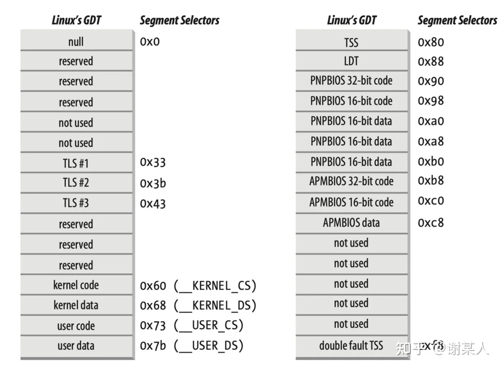
GDT包含的18个段描述符指向下列的这些段：
- 用户态和内核态的代码段和数据段共四个
- TSS
- 一个包括缺省局部描述符表的段。这个段通常是被所有进程共享的
- 三个局部线程存储段（TLS）。这种机制允许多线程应用使用最多三个局部于线程的数据段
- 与高级电源管理相关的三个段
- 与支持即插即用功能的BIOS服务程序相关的5个段
- 被内核用来处理双重错误异常的特殊TSS段
Linux LDT
硬件单元中的分页
分页单元（Paging Unit）把线性地址转化为物理地址。我们在这个时候判断此次内存访问是否有效：无效的话就会抛出一个页异常。
为了效率，我们把线性地址分成以固定长度为单位的组成为页，页内部的连续的线性地址被映射到连续的物理地址中。这样内核可以指定一个页的物理地址和存取权限，而不用指定页所包含的全部信息地址的存取权限。分页单元把所有的RAM分成固定长度的页框，有时叫做物理页。每一个页框包含一个页，也就是说一个页框的长度和一个页的长度一致。
页框是主存的一部分，因此也是一个存储区域区分一个页和一个页框是非常重要的。前者只是一个数据块，，可以存放在任何页框或磁盘中。
把线性地址映射到物理地址的数据结构成为页表，页表存放在主存中，并在启用分页单元之前必须由内核对页表进行适当的初始化。
从80836开始所有的80x86处理器都支持分页它通过设置CR0寄存器的PG标志启用。当PG等于零时线性地址就会被解释成物理地址
常规分页
32位的线性地址被分成三个域：
Directory（目录）最高10位
Table（页表）中间十位
Offset（偏移量）最低十二位
线性地址的转换分成两步完成，每一步都基于一种转换表。
第一种转换表称为页目录表，第二种转化表称为页表
使用这种二级模式的目的在于减少每个进程页表所需的RAM的数量。如果使用简单的一级页表，那将需要高达$2^{20}$个表项，也就是说在每项四个字节时需要4mbRAM来表示每一个进程的页表，即使一个进程并不使用那个范围内的所有地址。二级模式通过只为进程实际使用的那些虚拟内存区请求页表来减少内存使用量
每个活动进程必须有一个分配给他的页目录，不过没有马必要马上为进程的所有页表分配而言。只有在进程实际需要一个页表时才给该页表分配RAM会更有效率。正在使用的页目录的物理地址存放在控制寄存器CR3中，线性地址那的Directory字段决定页目录中的目录项，而目录项指向适当的页表地址的table字段依次又决定页表中的表项，而表项含有页所在页框的物理地址。
页目录项和页表项具有相同的结构：这是下面的字段说明：
Field:
由于一个页框的容量是4KB，所以该物理地址的低12位总是0‘
若此页表结构指向的一个页目录项，则该字段的物理地址对应的物理页框里面的内容是一个页表。
若此页表结构指向的一个页表项，则该字段的物理地址对应的物理页框是一页数据Present （P）:
若Present = 1，所指的页在内存中
若Present = 0，所指的页不在内存中.此时该结构中的其他位置可以由操作系统来支配，如果运行的的线性地址对用的页表项的Present = 0，则分页单元会将该线性地址存入寄存器cr2，并产生一个缺页异常:14号异常Accessed (A):
分页单元堆相应的页框进行寻址时就设置这个标志.当选中页被交换出去时，该标志位就可以有操作系统来支配.分页单元从不重置这个标志Dirty (D):
此标志只用于页表项中，用于标记页框有进行写操作Read/Write (R/W):
页或者页表的存取权限User/Supervisor (U/S):
页或者页表所需的特权级Page Size：
只应用于目录项，若设置为1，则页目录项指的是4MB或者2MB的页框.Global标志：
只应用在页表项。用来防止常用页从TLB高速缓存中刷新出去。只有在CR四寄存器的页全局启用标志置位时这个标志才起作用
硬件高速缓存
为了缩小CPU和RAM的速度差距，我们引入了cache体系。基于局部性原理，程序很可能会反复访问一些地址，只需要将他们存储起来，访问的时候直接取出而不是走取页表流程将会大大增加程序处理的速度。对于转换后援的缓冲器称为TLB，他则是加快线性地址向物理地址的映射。
Linux分页
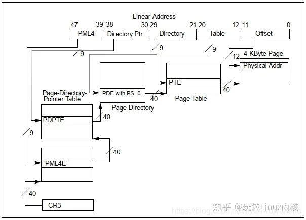
每一个进程都有一个指针指向它自己的PGD(Page Global Directory)，PGD是一个物理页框。该页框包含有一组类型为pgd_t的结构。该类型有具体的架构代码中指定。例如在x86下，其定义如下：
typedef struct { unsigned long long pgd; } pgd_t;
typedef struct { unsigned long pte_low, pte_high; } pte_t;
typedef struct { unsigned long long pmd; } pmd_t;每种架构加载page tables的方式有所不同。例如x86架构下，每个进程的page tables是通过复制mm_struct->pgd到cr3寄存器进行加载的。
- PGD中的每一个active项都对应着一个物理页框，该页框包含一组PMD(Page Middle Directory)其类型为pmd_t。
- PMD对应的又是一个物理页框，PMD页框中时一组PTE(Page Table Entries)其类型为pte_t,
- PTE对应一个物理页框用于存放最终的数据。

一条线性地址可能被切割为多个部分形成多级页表和页内偏移。为了帮助线性地址的切割，为每一级也表定义了一个宏：
/* PAGE_SHIFT determines the page size */
#define PAGE_SHIFT 12
#define PAGE_SIZE (1UL << PAGE_SHIFT)
#define PAGE_MASK (~(PAGE_SIZE-1))
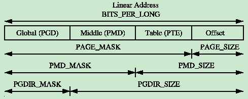
页表项描述(Describing a Page Table Entry)
如上面所描述，struct pte_t,pmd_t,pgd_t分别描述PTE，PMD,PGD。尽管它们通常是一个非负整数，但是它们仍然被定义成结构体有以下两种原因：
- 为了类型保护，因此避免它们被人不合时宜的误用
- 为了支持x86的PAE功能，因为PAE有多处4个bit来描述大于4GB的memory
从下面的定义来看，分别有两种定义：
#ifdef CONFIG_X86_PAE
extern unsigned long long __supported_pte_mask;
extern int nx_enabled;
typedef struct { unsigned long pte_low, pte_high; } pte_t;
typedef struct { unsigned long long pmd; } pmd_t;
typedef struct { unsigned long long pgd; } pgd_t;
typedef struct { unsigned long long pgprot; } pgprot_t;
#define pte_val(x) ((x).pte_low | ((unsigned long long)(x).pte_high << 32))
#define HPAGE_SHIFT 21
#else
#define nx_enabled 0
typedef struct { unsigned long pte_low; } pte_t;
typedef struct { unsigned long pmd; } pmd_t;
typedef struct { unsigned long pgd; } pgd_t;
typedef struct { unsigned long pgprot; } pgprot_t;
#define boot_pte_t pte_t /* or would you rather have a typedef */
#define pte_val(x) ((x).pte_low)
#define HPAGE_SHIFT 22
#endif为了类型转换，分别定义了4对宏方便转换:
struct -> uint:pte_val(), pmd_val(), pgd_val() ,pgprot_val()
uint -> struct:pte(), pmd(), pgd() , pgprot()如何使用页表项(Using Page Table Entries)
为了遍历页目录，下面三个宏被定义用来将一个线性地址快速分理出其内部组成部分。
- pgd_offset():输入线性地址和mm_struct,返回线性地址中对应的PGD项。
#define pgd_offset(mm, address) ((mm)->pgd+pgd_index(address))
#define pgd_index(address) (((address) >> PGDIR_SHIFT) & (PTRS_PER_PGD-1))
12pmd_offset()：输入一个PGD项(找到页框地址)和一个线性地址（找到pmd的偏移），返回一个对应的PMD
#define pmd_offset(dir, address) ((pmd_t *) pgd_page(*(dir)) + pmd_index(address))
#define pgd_page(pgd) ((unsigned long) __va(pgd_val(pgd) & PAGE_MASK))
12pte_offset_kernel():输入一个PMD(找到页框地址)和一个线性地址(找到页内偏移)
#define pte_offset_kernel(pmd, address) ((pte_t *) pmd_page_kernel(*(pmd)) + pte_index(address))
#define pmd_page_kernel(pmd) ((unsigned long) __va(pmd_val(pmd) & PAGE_MASK))
#define pte_index(address) (((address) >> PAGE_SHIFT) & (PTRS_PER_PTE - 1))
123第二轮的宏函数是用来检查页表项是否存在或者是否有人在使用：
- pte_none(), pmd_none() and pgd_none()：如果对应的项不存在，返回1
- pte_present(), pmd_present() and pgd_present()：如果对应项的PRESENT为被置位，返回1
- pte_clear(), pmd_clear() and pgd_clear()：将会清除对应的项
- pmd_bad() and pgd_bad() :用来检查页表项是否符合要求
上述的几组宏的使用例程：
pgd_t *pgd;
pmd_t *pmd;
pte_t *ptep, pte;
pgd = pgd_offset(mm, address);
if (pgd_none(*pgd) || pgd_bad(*pgd))
goto out;
pmd = pmd_offset(pgd, address);
if (pmd_none(*pmd) || pmd_bad(*pmd))
goto out;
ptep = pte_offset(pmd, address);
if (!ptep)
goto out;
pte = *ptep;
12345678910111213第三轮的宏是用来检查页表项的权限和设置页表项的权限。这些权限决定了一个用户空间的进程在一个page上能干什么不能干什么。举例：内核页表项永远不能被用户进程读取。
- pte_read()：用来测试pte的读权限，pte_mkread() 设置读权限，pte_rdprotect()取消读权限
- pte_write()：用来测试pte的写权限，pte_mkwrite() 设置读权限，pte_wrprotect()取消读权限
- pte_dirty()：用来测试是否有被写过，pte_mkdirty()设置dirty位，pte_mkclean()清除dirty位
- pte_young()：用来测试是否是新页，pte_mkyoung()设置新页，pte_old()设置位旧页（检查access位）
转换和设置页表项（Translating and Setting Page Table Entries）
- mk_pte()：输入一个struct page和保护位组合形成pte_t。
#define page_to_pfn(page) ((unsigned long)((page) - mem_map)) //mem_map中的偏移就是PFN
#define pfn_pte(pfn, prot) __pte(((pfn) << PAGE_SHIFT) | pgprot_val(prot)) //将PFN与权限bit为合并形成pte_t
#define mk_pte(page, pgprot) pfn_pte(page_to_pfn(page), (pgprot))
123- set_pte()：输入一个PDM页框内的地址，然后将pte_t赋值在这个地址中。
#define set_pte(pteptr, pteval) (*(pteptr) = pteval)
1- pte_page()：将pte_t转换为struct page
分配释放页表(Allocating and Freeing Page Tables)
- 分配函数： pgd_alloc(), pmd_alloc() and pte_alloc()
- 释放函数：pgd_free(), pmd_free() and pte_free()
内核页表(Kernel Page Tables)
当系统启动时，分页功能还没有启用因为页表不会自己初始化自己。因为每种架构中的具体实现各不相同本文只讨论x86的case。page table的初始化被分为两个阶段：
- bootstrap阶段创建前8MB的页表来开启分页单元。
- Finalising阶段初始化剩余的页表。
Bootstrapping阶段
在文件arch/i386/kernel/head.S中的startup_32()汇编函数负责开启分页单元。一般内核的所有常规代码编译后的内核镜像vmlinuz的起始地址被设置位PAGE_OFFSET + 1MB。而内核实际加载地址是物理内存1MB的位置开始的。从0~1MB这段物理地址通常被某些设备用来个BIOS通信，所以被内核弃之不用。Bootstrapping阶段的代码从虚拟地址转换为物理地址的方法是vaddr - _PAGE_OFFSET,就是直接映射。Bootstrapping阶段要用此方法映射从1MB开始的前8MB物理地址（1MB ~ 9MB）到虚拟地址，直到分页单元被启用。
内核页表初始化从内核编译时静态定义的swapper_pg_dir数组开始，swapper_pg_dir的地址为0x00101000，再建立两页的页表项：pg0，pg1。将swapper_pg_dir中的第0项和第768项设置为pg0的物理地址，第1项和第769项设定为pg1页框的物理地址,swapper_pg_dir中的其他项都填0.这也就是说当分页功能开启的时候，内核无论是用物理地址还是虚拟地址都可以将这两页表映射到正确的page中。其余的页表由paging_init()函数来进行初始化。
一旦临时内核页表映射完成，就会通过设置cr0寄存器的一个bit位来开启分页单元。
Finalising阶段
在此阶段会执行paging_init()函数来执行，其调用流程如下：
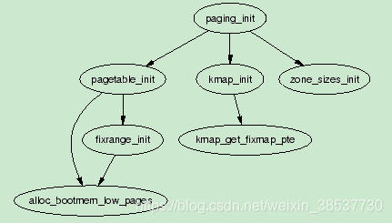
- pagetable_init() 会初始化内核线性映射区间的虚拟地址到物理地址转换所需的页表。此时只创建pmd和pte，并未将每个页框创建相应的struct page，其具体初始化的虚拟地址段如下图所示：
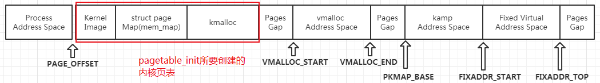
让后再调用page_table_range_init()初始化固定映射区域的内核页表：
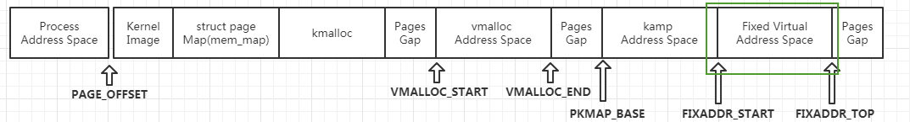
一旦pagetable_init()返回，内核空间的所有页表都初始化完成，因此swapper_pg_dir会被加载到cr3寄存器，以此这些页表就可被分页单元使用了。 - kmap_init()：将rang_init对应的PTEs加上保护位PAGE_KERNEL
- zone_sizes_init():初始化各个zone，其中最重要的是为每个页框分配struct page，形成mem_map数组。
Mapping addresses to a struct page
Mapping Physical to Virtual Kernel Addresses
从Linux的线性映射我们可以知道物理地址0对应虚拟地址PAGE_OFFSET(3GB)，因此任何线性映射区的虚拟地址转换成物理地址的方法就非常简单了，直接将虚拟地址减去PAGE_OFFSET即可。下面来看看内核的实现：
虚拟地址 —> 物理地址
#define __pa(x) ((unsigned long)(x)-PAGE_OFFSET) //将虚拟地址转换为物理地址 static inline unsigned long virt_to_phys(volatile void * address) { return __pa(address); }物理地址 —> 虚拟地址
#define __va(x) ((void *)((unsigned long)(x)+PAGE_OFFSET)) //将物理地址转换为虚拟地址 static inline void * phys_to_virt(unsigned long address) { return __va(address); }
Mapping struct pages to Physical Addresses
从上面的章节我们可以知道kernel image的起始地址是物理地址1MB的地方，然后改物理地址转换成虚拟地址之后就是PAGE_OFFSET + 0x0010000,其后续的一个8MB的地址空间是留给内核的静态代码使用的区域。所以这是不是就预示着第一个可用的虚拟地址就是0xC0800000呢？其实不是如此，Linux尽量将前16MB的虚拟地址留给ZONE_DMA，因此第一个可供内核动态分配可用的虚拟地址是0xC1000000。这也就是全局变量mem_map的地址。ZONE_DMA只有在很必要的情况下使用。
物理地址转换为struct page是通过将物理地址视为mem_map数组的index。将物理地址向右平移PAGE_SHIFT个bit将得到PFN，PFN也是mem_map的index。即 struct *page = mem_map[paddr >> PAGE_SHIFT]
vaddr -> struct page:
#define virt_to_page(kaddr) (mem_map + (__pa(kaddr) >> PAGE_SHIFT))struct page -> paddr:
显而易见，通过page的地址就可以知道该page在mem_map中的index，其index就是PFN，然后将其后12位补0，就是物理地址。
至此来总结下Linux的地址模型：
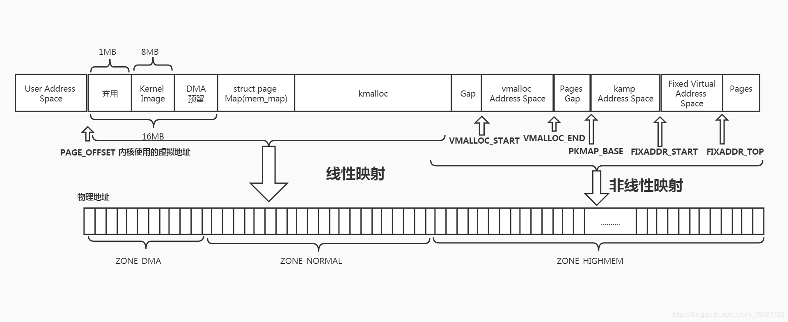
Translation Lookaside Buffer (TLB)
在早期，当处理器需要将虚拟地址映射成物理地址时，它必须扫描所有页目录来搜索需要的PTE。为了避免这种可以想象的消耗，各种不同的硬件架构都给出了一小块内部缓存空间，即提供TLB来缓存虚拟地址到物理地址的转换表。
尽管不是所有架构都有提供TLB，但是Linux内核还是假设所有架构够提供，不能提供的在编译的时候关掉响应的config即可。Linux提供了一些刷新TLB的hook函数：
| void flush_tlb_all(void) |
|---|
| 刷新系统中每一个处理器的整个TLB，这时最昂贵的TLB刷新操作。当该操作完成之后，所有对page tables的修改都变得全局可见。例如当调用vfree()之后就需要刷新整个TLB |
| void flush_tlb_mm(struct mm_struct *mm) |
|---|
| 刷新userspace中和mm_struct相关的整个TLB。在某些架构下，如MIPS，该操作需要对应所有的处理器，但通常是局部的处理器。该操作仅仅是在当整个address space都有影响的case下才执行如：fork的时候复制了整个地址空间或者是删除了所有地址映射 |
| void flush_tlb_range(struct mm_struct *mm, unsigned long start, unsigned long end) |
|---|
| 刷新mm上下文中指定范围内的用户空间的页表。当一个新的region被移动或者被改变时如调用mremap()时调用 |
| void flush_tlb_page(struct vm_area_struct *vma, unsigned long addr) |
|---|
| 该API是用来刷新TLB中的单个page，当一个page产生page fault之后或者是page out之后调用 |
| void flush_tlb_pgtables(struct mm_struct *mm, unsigned long start, unsigned long end) |
|---|
| 当page tables被释放或者被分裂时调用。有些平台只缓存最低level的page table，PTE，当pages被删除或者是被重新映射后，就需要刷新TLB |
| void update_mmu_cache(struct vm_area_struct *vma, unsigned long addr, pte_t pte) |
|---|
| 该API仅仅在page fault完成之后被调用 |
Level 1 CPU Cache Management
CPU caches，例如,TLB caches，主要是利用程序优先使用局部的数据。为了避免在使用数据时都要从主内存中取数据，CPU从而开始缓存一小部分数据在CPU cache中。通常来讲，有两种层级的cache，Level 1 和Level 2 CPU cache，L2 cache比L1 cache要慢很多。Linux通常只关心L1 cache。
CPU cache通常被组织成lines(行)。每个Line通常非常小，一般是32个字节，每个Line都需要与自己的边界对齐。换句话说，就是一个32字节的cache line将要求32字节对齐。在Linux中line大小有变量L1_CACHE_BYTES来描述，由各种架构自己定义具体的值。
地址如何被映射到cache line因架构而异。但是主要有三种方式：
- direct mapping：每个内存块只能映射到一个可能的cache line
- associative mapping：任意的内存块能映射到任何一个cache line
- set associative mapping：一种组合方法，任何内存狂只能映射到某个缓存行子集中的任意行。
不管是什么映射方案，它们有一个共同点：地址相近并且和cache size对齐的地址尽量使用不同的缓存行。因此Linux使用最简单的策略来最大利用cache:
- 结构中经常被访问的字段通常在结构开始的位置，从而增加仅用一个缓存行来处理普通字段的机会。
- 一个结构中不相关的项应该至少有缓存大小的字节数的隔离从而避免在CPU之间的错误共享。
- 通用缓存中的对象，如mm_struct 缓存，应该要与L1 CPU cache对齐从而避免错误共享。
如果CPU要引用的一个地址不再CPU cache中，CPU就需要从主内存中取数据。然后CPU cache匹配失败的代价是非常昂贵的，因为从L1 cache中访问一个地址只需要10ns，而从主内存中访问一个地址要100 ~ 200ns。因此最基本的原则是尽可能多的命中缓存尽可能少的命失缓存。